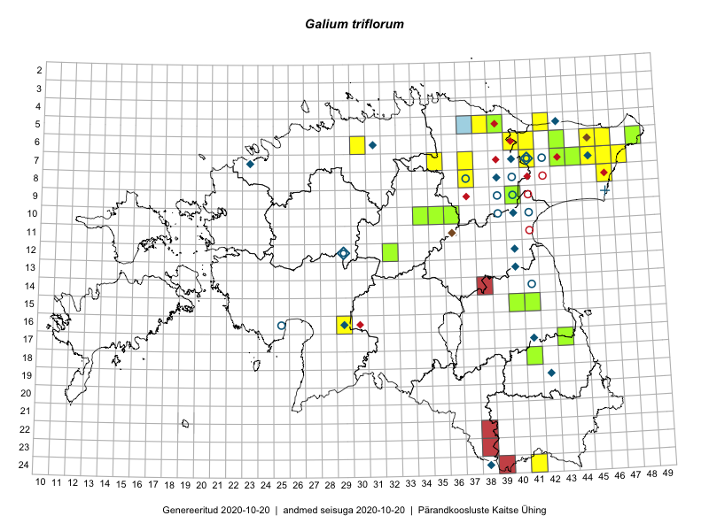

Galium triflorum
Uuendatud: 2016-12-02
Kaardile koondatud taksonid: Galium triflorum Michx.

Kaart põhineb 48 vaatlusel. Taksonit on leitud 22 ruudust.
Kuvatud viited 20 esimesele andmebaasikirjele, ülejäänud PlutoFis
- Toomas Kukk, Eerik Leibak: 2015-04-27: 07-41: ala
- Toomas Kukk, Eerik Leibak: 2015-04-27: 07-41: GPS punkt
- Toomas Kukk, Tiit Hallikma: 2015-06-01: 07-45: ala
- Tiit Hallikma, Toomas Kukk: 2015-06-01: 07-45: GPS punkt
- Ott Luuk, Hannes Pehlak: 2015-07-21: 06-48: ala
- Thea Kull, Eerik Leibak: 2015-07-20: 06-45: ala
- Thea Kull, Eerik Leibak: 2015-07-20: 06-45: GPS punkt
- Thea Kull, Eerik Leibak: 2015-07-20: 06-45: GPS punkt
- Thea Kull, Eerik Leibak: 2015-07-22: 05-42: ala
- Thea Kull, Eerik Leibak: 2015-07-22: 05-42: GPS punkt
- Toomas Kukk, Peedu Saar: 2014-09-12: 07-41: ala
- Toomas Kukk, Peedu Saar: 2014-09-12: 07-41: GPS punkt
- Toomas Kukk, Peedu Saar: 2014-09-12: 06-41: ala
- Toomas Kukk, Peedu Saar: 2014-09-12: 06-41: GPS punkt
- Toomas Kukk, Peedu Saar: 2014-09-12: 06-41: GPS punkt
- Thea Kull, Eerik Leibak: 2015-07-23: 08-46: ala
- Toomas Kukk, Peedu Saar: 2014-09-11: 06-43: ala
- Toomas Kukk, Peedu Saar: 2014-09-11: 06-43: GPS punkt
- Toomas Kukk, Peedu Saar: 2014-09-10: 07-43: ala
- Toomas Kukk, Peedu Saar: 2014-09-10: 07-43: GPS punkt